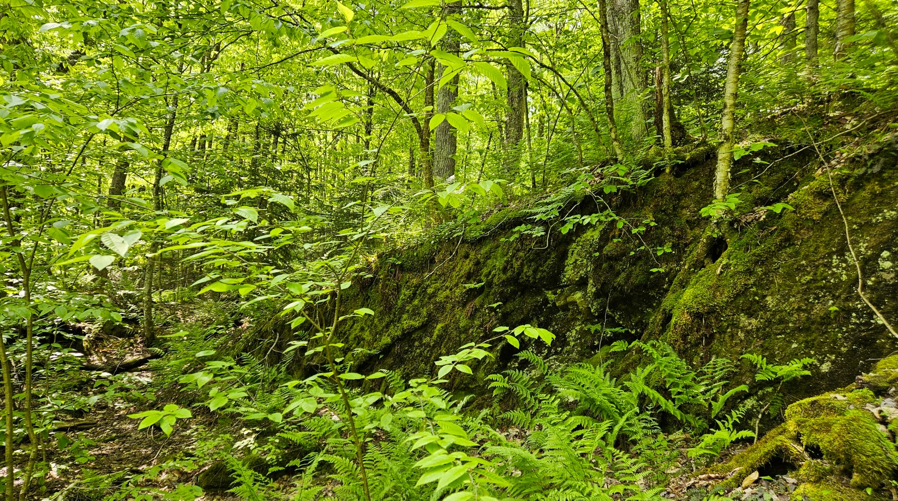
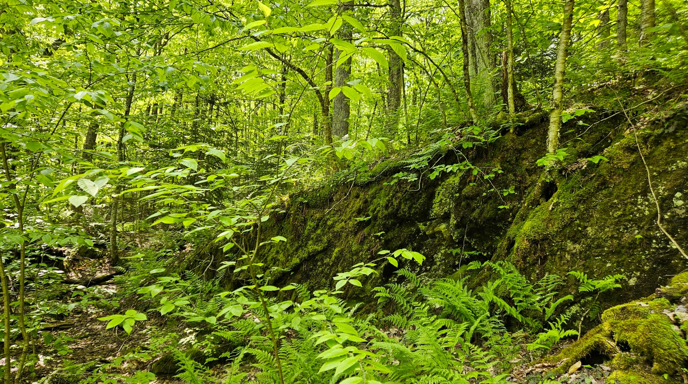

12 km from Knowlton

30 km from Magog

60 km from Sutton

Land in a highly sought-after area of the Eastern Townships, in the heart of nature, close to vibrant urban centers.
The varied terrain features a rich diversity of forest stands: sugar maple, linden, beech, yellow birch (cherry birch), and hophornbeam (ironwood). As you explore the site, you’ll encounter various topographic forms, including rocky outcrops, glacial erratics, and a gorge shaped by a stream flowing through a clear water basin at the base of a 6-7 meter waterfall.


 


The geological environment consists of Sutton schist, covered by a deposit of sand and gravel. The overall terrain morphology is undulating, adding to its appeal.